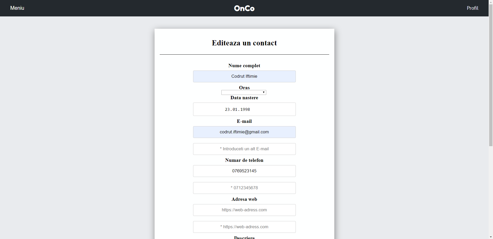

Atunci cand intrati pentru prima oara pe site veti fi intampinat pe pagina de autentificare.
Pagina de autentificare
Daca aveti un cont creat atunci puteti sa introduceti emailul si parola aferente contului, apoi apasati pe butonul Login.
Daca nu aveti un cont creat atunci apasati butonul Vreau sa imi fac cont! si va va aparea un formular pentru introducrerea datelor unui nou cont.
Register
Pagina de inregistrare
Dupa ce ati introdus datele necesare si ati apasat pe butonul Register veti fi redirectionat la pagina de autentificare pentru a introduce datele noului cont pentru a continua pe site.
Dupa ce v-ati logat, nu va mai trebui sa introduceti datele de autentificare timp de o ora.
Pagina principala
După logare, sunteti redirectionat către pagina principală care reprezinta pagina in care sunt listate toate contactele dumneavoastra. Daca este prima oara cand va logati, veti avea un contact care reprezinta contactul dumneavoastra.
Pagina principală
Pagina este impartita in doua parti. In partea stanga este partea de filtrare.
In partea dreapta este partea in care apar conactele in functie de grupul in care sunt.
Filtrarea se poate face in functie de 5 criterii:
Nume
Varsta (varsta minima si varsta maxima)
Locatie
Studii
Interese
Filtrele pentru locatie si studii vor aparea atunci cand contactele au setate aceste valori.
Bara de navigatie
Bara de navigatie
Pe fiecare pagina va aparea aceasta bara de navigatie.
Aceasta contine 2 butoane: Meniu si Profil
Butonul Profil te redirectioneaza la pagina in care iti arata toata detaliile contactului tau.
Butonul Meniu deschide o fereastra ce iti permite navigarea pe diverse pagini.
Bara de navigatie cu meniul deschis
Butonul ❌ inchide acest meniu.
Pagina de gestionare a gruparilor
Pagina de gestionare a gruparilor
In aceasta pagina poti grupa anumite contacte. Spre exemplu poti face grupari de genul colegi, familie etc.
Initial nu este nici un grup creat. Pentru a crea un grup apasa pe butonl Grup nou si iti va aparea o fereastra in care ti se solicita numele noului grup.
Adaugarea unui grup
Dupa crearea noului grup deasupra butonului Grup nou se va actualiza o lista care contine numele tuturor grupurilor create de tine iar in partea stanga, in tabela Grupati va aparea numele grupului nou creat.
Pentru a muta un contact din tabela Negrupati in tabela Grupati selectati din lista mentionata mai sus numele grupului apoi dati click pe un contact pentru a-l selecta.
Veti sti ca un contact a fost selectat atunci cand acel fundal albastu se intuneca (Exemplu: contactul Alexandru Gheorghe din poza de mai jos).
Selectarea unui contact
Pentru a muta contactul in grupul selectat(in cazul de fata Familie) apasati pe butonul ⏪.
Dupa apasarea butonului contatul va aparea in partea stanga sub numele grupului specificat.
Pentru a muta contactul inapoi la contacte negrupate, selectati-l si apoi apasati pe butonul ⏩.
Pentru a muta un contact dintr-un grup in altul nu este nevoie ca sa il mutati intai la contacte negrupate iar apoi la noul grup. Selectati contactul, apoi selectati noul grup din lista de grupuri (ordinea nu conteaza) si apoi apasati pe butonul
⏩.
Contact mutat in alt grup
Vizualizarea unui contact
Vizualizarea detaliilor unui contact
Aceasta pagina contine trei butoane: Export CSV, Export VCard si Editeaza
.
Butonul Editeaza te trimite pe pagina de editare a contactului pe care il vizualizezi.
Butoanele Export CSV si Export VCard au rolul de a crea un fisier de tip CSV respectiv VCard ce contine datele contactului respectiv.
Editarea/Adaugarea unui contact

Editarea unui contact
Aceasta pagina contine mai multe campuri ale contactului caruia i s-a solicitat editarea deja completate cu valorile curente. Dupa modificarea campurilor dorite si dupa apasarea butonului Salveaza contactul este actualizat.
Pentru adaugarea unui contact aveti acelasi formular, diferenta fiind ca acele campuri nu au nici o valoare.